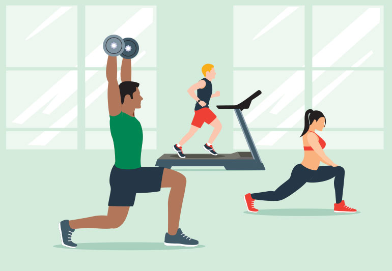

Exercise is defined as a physical activity that improves overall health and wellness. Just a few of the many benefits include protecting against many chronic dieseases, improving heart health, improving joint pain and stiffness, and increaseing life span. It is recommended by the CDC to do 150 minutes of moderate-intensity physical activity each week.
There are 3 main types of physical activity: aerobic, muscle strengthing, and bone strengthing. Within these physical activites are many different types of exercises you can do. Aerobic exercises can range from running and swimming to playing tennis or basketball. Muscle strengthing focuses on building up your muscles and to do this you would lift weights, cycle, or walk up a hill. Lastly, for bone stregnthing the best exercises for this category is anything that involves jumping, running, or any sport that involves rapid changes in direction.
Many people do not go to the gym as they are unsure with what exercises they should do. This is why lots of gyms offer classes for people that sign up. This allows a personal trainer to led the particpants in what exercises they should do and explain what areas they target. Classes for all the different type of exercises are offered depending on the gym you go to. It is a great way to get your physical activity in for the day and also meet some new people!